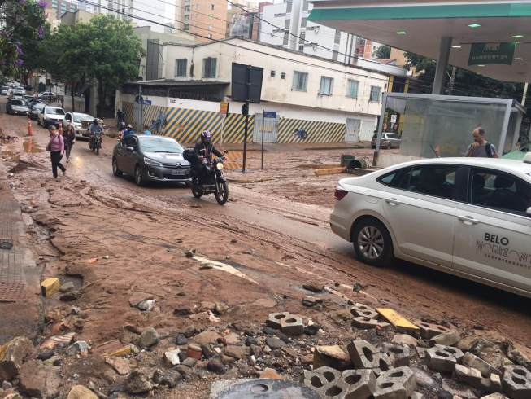
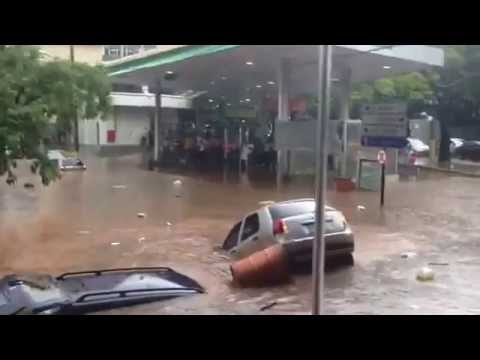

O APOEMA tem como objetivo ajudar motoristas em situações de risco , caudas por temporais e chuvas ,não se precupe estaremos ao seu lado , com as melhores informaões e sugestões para poupar os danos materias e salvando vidas!.
Av.Prudente de Morais alagada
Ações sugeridas
Na região Centro-sul se deve evitar imediatamente a Av.Prudente de Morais quando estiver chivendo , a localidade é conhecida pelos seguros ,pois é la onde grande parte de carros e motos são perdidos.
Outros locais afetados
Desvios Sugeridos